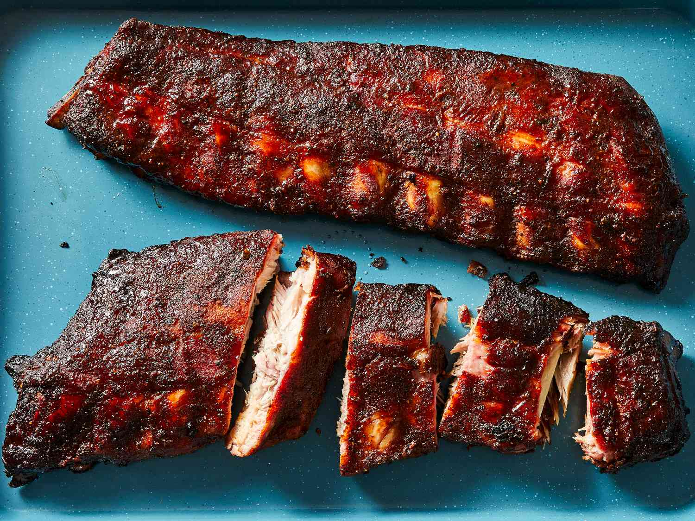

Smoked Ribs

Ingredients
- Spare Ribs cut and trimmed to preferred style.
- Rub, marinade, or seasoning of choice.
- Barbacue sauce, dry spices of choice.
Steps
- If marinading the ribs, soak in the marinade of choice for six to twelve hours before cooking in a large cassarole dish with a cover or plastic wrap.
- If using a rub, apply rub or seasoning to the ribs on both sides, enough to have good coverage but not so thick that smoke cannot penetrate.
- On a smoker, get the heat with the wood of your choice up to 200 degrees fahrenheit. Allow smoker to clear out of white or 'dirty' smoke.
- Once the smoker is clear, put the ribs off direct heat bone-side down on the smoker.
- Allow ribs to smoke until around 180 degrees fahrenheit as measured at the center of the meat by a thermometer, est. three to four hours.
- Once ribs have reached 180, increase the heat of the smoker up to 225-250 degrees fahrenheit. Check temperature regularly.
- When the ribs reach 197-201 degrees fahrenheit, remove from the smoker. Wrap in foil or place in a cooler used for the purpose and allow to rest for thirty minutes.
- Serve with your choice of barbacue sauce or spices.